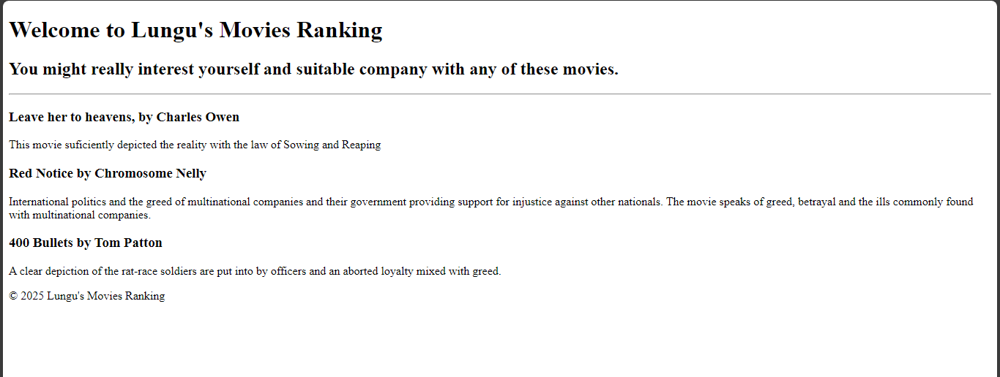

Birthdays happen once a year, I thought it would be memorable to share mine with you.
So, please, be my guest!
It's fun to send an online invite for events which allow the organizer space and resources to
say more about the event and also have a RSVP form for the invitees to respond.
Contact me if you would like
to have one for your next event!
This is a movie-ranking website that allows users to rank movies based on their preferences. It features a clean and user-friendly interface, making it easy for users to navigate and find their favorite movies.
The site however started as the authour's rank-list of the movies featured therein. Updated version shall soon be available to allow users to create accounts and have their own personalized movie rankings. Stay tuned!
Check out my Movie-Ranking Website 